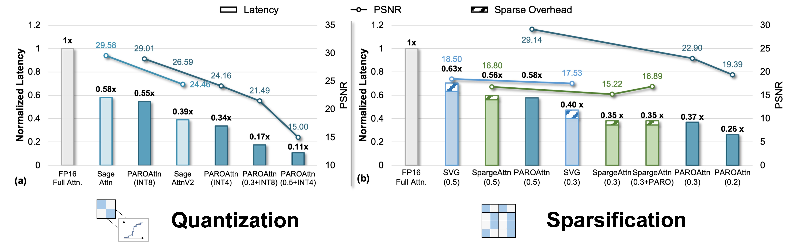

The remaining content further elaborates the idea of PAROAttention as follows:
We implement efficient CUDA Implementation of PAROAttention, including kernel fusion, prefetching to minimize the overhead. We conduct comparison with current attention sparsification and quantization methods, and demonstrate PAROAttn's superior performance in both hardware efficiency and generation quality.
To find a unified solution for Attention sparsity and quantization, we analyze the key challenges in optimizing Attention efficiency through sparsity and low-bit quantization. We conclude the key challenges arise from the diverse and scattered visual attention patterns (as shown on the left side of the figure below).
To address the aforementioned challenges, we seek an approach to "reorganize" the attention maps to obtain more uniform and concentrated attention patterns. Inspired by the locality prior of visual feature extraction (e.g., CNN, SwinTransformer design principles, and Hubel & Wiesel's biological experiments), we further analyze the causes of the diversity of visual attention patterns and identify that "diverse visual attention patterns all describe local aggregation in space."
As shown in the figure below, during the tokenization, the original 3D space (F - frame count, H, W - width and height of each frame's image) is reshaped into a 1D token sequence, arranged in the default order of [F, H, W]. This transformation causes pixels in adjacent positions of the 3D space (except for the last dimension (W), which is contiguous in memory) to be spaced out in the token sequence. The tokens with the same interval actually describes neighboring pixels along certain dimension in the 3D space. Therefore, multi-diagonal attention patterns actually describe "local aggregation in other dimensions," and can be transformed into block-wise patterns that represent local aggregation through token sequence reordering (by transforming the local aggregation dimensions into contiguous memory dimensions, such as [F, H, W] -> [F, W, H]).
We further verified that each different attention head (Head) consistently presents local aggregation in a particular dimension in different scenarios. As a result, we can design an appropriate token reordering scheme for each head to transform the diverse and scattered attention patterns into uniform, hardware-friendly block-wise patterns, significantly ease the difficulty the sparsification and quantization of Attention. This approach leverages the locality of visual feature extraction on the algorithm side (better numerical locality) and aligns it with the locality of hardware computation (better memory and computation locality), thus achieving both optimal algorithm performance retention and hardware efficiency improvement.
The flow of our approach is shown in the figure below. For the main bottlenecks in Attention computation, namely the two large-scale matrix multiplications (QK and PV), we have performed both sparsification and quantization optimization, significantly reducing their hardware overhead. We offline determine the token reordering scheme for each attention head (Head) and the corresponding sparse mask based on a small amount of corrective data, which introduces almost no additional overhead during inference. During inference, we only need to skip the attention blocks corresponding to the sparse mask and perform low-bit quantization block-by-block on the remaining parts.
We have discovered that each different attention head (Head) consistently presents local aggregation in a particular dimension under different scenarios. Therefore, we can offline select an appropriate token reordering method for each attention head to transform the attention map into a block-wise pattern that exhibits local aggregation. We select a special case in the reordering process, (dimension permutation), which yields good results. For the feature [F, H, W] of video generation models, we explored six possible permutation methods for each attention head and offline selected the optimal permutation to achieve the desired data distribution. Since attention sparsification and quantization require different data distribution properties, we designed selection criteria for reordering methods specifically for sparsification and quantization, combining both as the final criterion.
As shown in the figure below, sparsification and quantization have different distribution requirements for attention maps. We need to combine both requirements to find a reordering method that fits both. After appropriate reordering, the attention map exhibits a block-wise and more concentrated distribution, suitable for both sparsification and quantization processing.
Existing sparse attention schemes can be divided into two approaches: (1) dynamic sparsification schemes (e.g., SpargeAttention), which generate sparse masks online based on attention values; and (2) static sparsification schemes (e.g., DiTFastAttn), which generate sparse masks offline. Both approaches have their advantages and disadvantages. Although the token reordering scheme (PARO) designed in this paper can help both dynamic and static schemes, we analyze the advantages and disadvantages of both and ultimately select the static sparsification scheme as the main sparsification approach for PAROAttention. The detailed analysis is as follows:
In summary, under low sparsity ratios, dynamic sparsification faces a bottleneck in terms of both accuracy and efficiency improvement. Therefore, we resort to the static sparsification scheme in this paper.
After reordering, the attention map presents a uniform and concentrated block-wise pattern. Therefore, we can offline compute the sum of attention data within each block and design a threshold to determine whether the current block should be skipped (this threshold can be adjusted to control density). The sparse mask can be offline obtained without introducing any additional overhead during inference. As shown in the figure below, compared to other existing static attention sparsification schemes, PAROAttention avoids the complex and restricted mask design due to the pre-unification of attention patterns, allowing for sparse masks that fit well with the original attention map.
For low-bit quantization, the key metric for evaluating quantization loss is the data variance within groups. Existing literature typically uses incoherence to measure this, which is defined as the ratio of the maximum value to the mean value within the current data group (x.max() / x.abs().mean()). After appropriate token reordering, the significant data variance within the Attention Map blocks is significantly alleviated, thereby enabling support for lower bit-width quantization.
Minimizing Additional Overhead: The additional overhead introduced by PAROAttention mainly includes the following two aspects. We have conducted targeted optimizations at the system level to minimize this overhead.
Compatibility: Both the sparsification and quantization schemes in PAROAttention are processed block by block, making them directly compatible with FlashAttention. Since both the reordering and sparse mask generation are completed offline, no fine-tuned CUDA kernel optimizations are required. Only support for skipping entire block computations based on FlashAttention is necessary, enabling broad adaptability to various scenarios.
This paper tests multiple metrics on mainstream video (CogVideo) and image generation models (Flux), including:
The typical experimental conclusions are summarized as follows:
We further analyzes the system-level optimization techniques, with the key experimental conclusions summarized as follows:
In summary, this paper focuses on the "locality" characteristics of visual generation tasks. Through a simple yet effective token reordering operation, we can simultaneously achieve better algorithm performance retention by leveraging the locality of visual feature extraction (better numerical locality) and align it with the locality of hardware computation (better memory and computation locality), thereby obtaining improvements in both algorithm performance and hardware efficiency. The PAROAttention approach is primarily designed to optimize inference efficiency; however, the concept of utilizing token reordering to better exploit feature extraction locality is beyond inference optimization. Different attention heads autonomously learn local aggregation in different dimensions, which can inspire optimizations in training methods, image parameterization, the design of three-dimensional positional encodings, and further advance the construction of visual backbone models with reasonable inductive biases.
@misc{zhao2024viditq,
title={ViDiT-Q: Efficient and Accurate Quantization of Diffusion Transformers for Image and Video Generation},
author={Tianchen Zhao and Tongcheng Fang and Enshu Liu and Wan Rui and Widyadewi Soedarmadji and Shiyao Li and Zinan Lin and Guohao Dai and Shengen Yan and Huazhong Yang and Xuefei Ning and Yu Wang},
year={2024},
eprint={2406.02540},
archivePrefix={arXiv},
primaryClass={cs.CV}
}